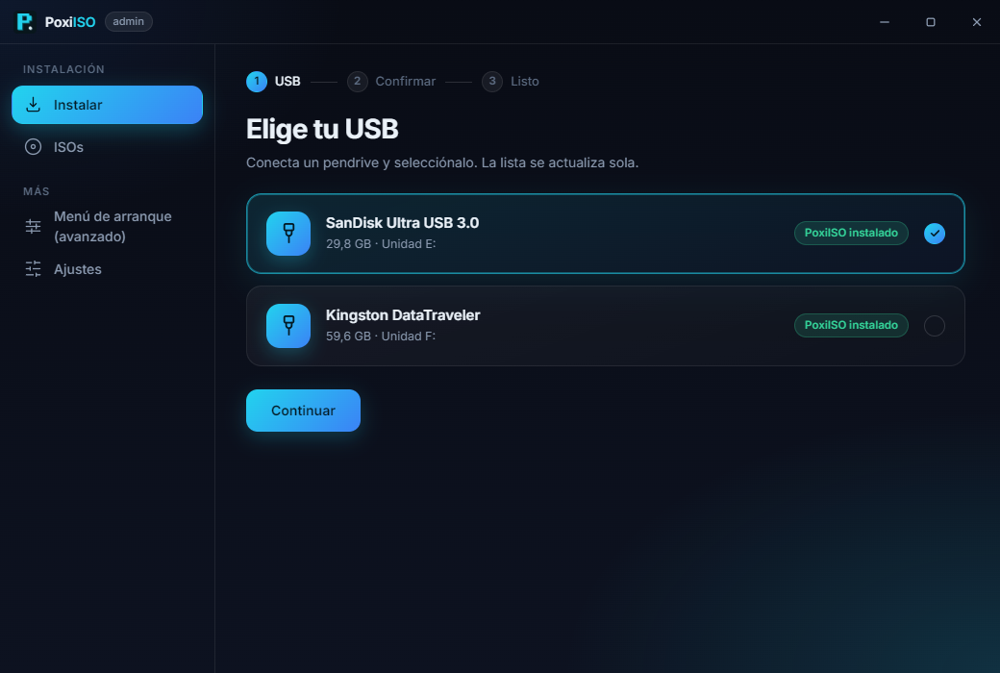
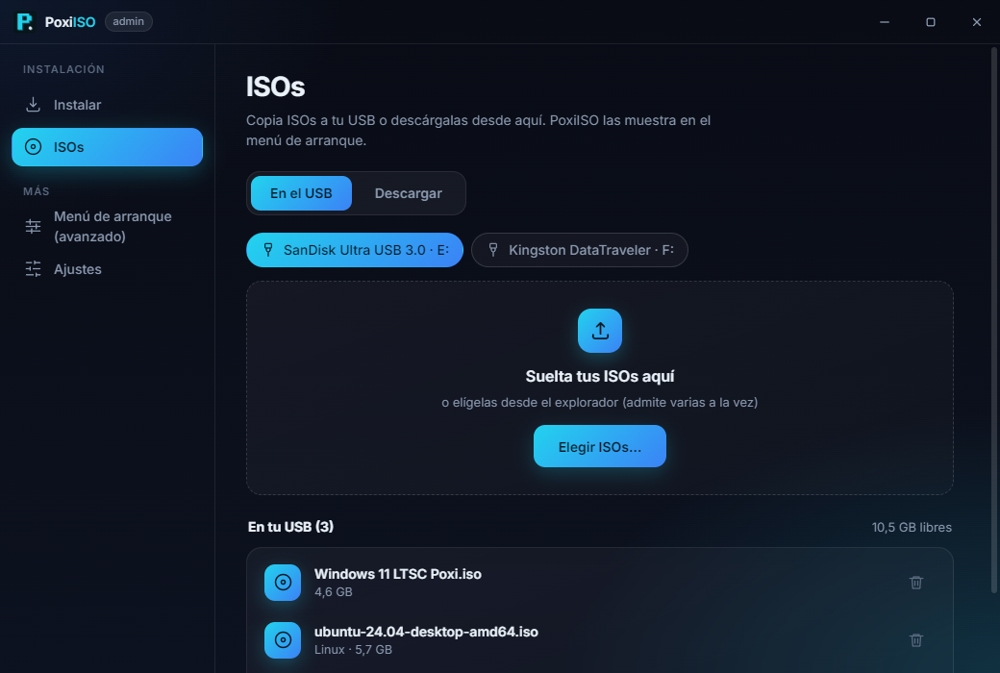
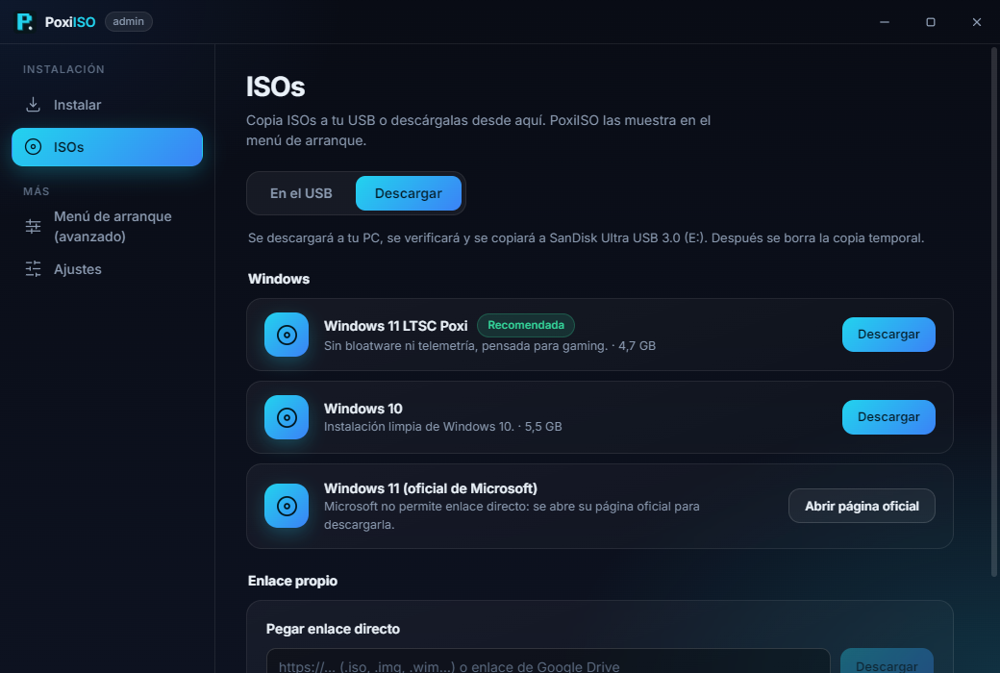
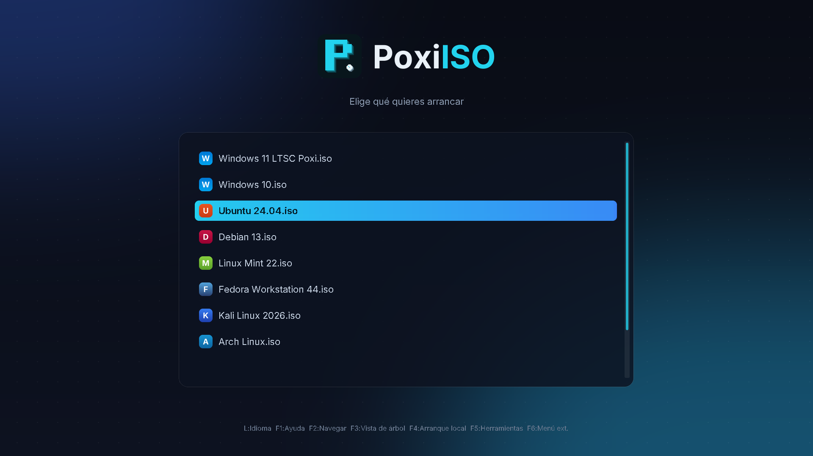
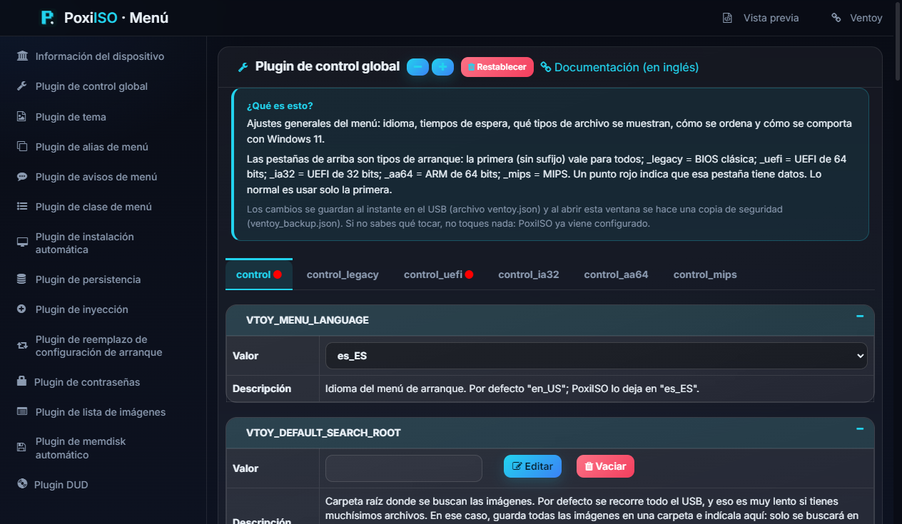

Instalación en 3 pasos
Elige el USB, confirma y listo. Si ya lo tenías, actualiza sin perder tus ISOs.
Copia tus ISOs a un pendrive y elige cuál arrancar. Sin volver a formatear, sin complicaciones y con un menú que da gusto ver.
Windows 10 y 11 · Instalador de ~1 MB · También hay versión portable

PoxiISO usa el motor de arranque de Ventoy, probado por millones de personas, y le pone por encima una interfaz hecha para que no tengas que pensar.
Elige el USB, confirma y listo. Si ya lo tenías, actualiza sin perder tus ISOs.
Varias ISOs a la vez, con progreso y botón de cancelar. Nunca deja archivos a medias ni pisa los que ya tienes.
Windows 11 LTSC Poxi, Windows 10 y 11, y Linux en Avanzado. Con verificación de integridad y reanudación.
Un menú de arranque moderno y legible, con un icono para cada sistema y el estilo de la familia Poxi.
El configurador avanzado del menú, entero en español y con una explicación en cada pantalla.
Solo escribe en USBs con PoxiISO, nunca en tu disco duro. Confirmación antes de borrar.
Cuatro pasos. La primera vez tarda un par de minutos; después solo arrastras ISOs.
Baja el instalador pequeño (o el portable) desde la página de descargas.
Elígelo y mantén pulsado Instalar para confirmar el borrado.
Arrástralas a la pestaña ISOs o descárgalas desde Descargar.
Inicia el equipo desde el USB y elige qué instalar o probar.
Capturas reales de la aplicación y del menú de arranque (con datos de ejemplo).




PoxiISO está basado en Ventoy (GPLv3). El motor de arranque es el original, sin modificar. Lo que cambia es la interfaz, el tema del menú, las descargas y las traducciones. Todo el mérito del motor es del proyecto original.
El instalador no está firmado digitalmente (los certificados cuestan dinero), y los instaladores diminutos que descargan el resto se parecen a los de algunos virus, así que SmartScreen desconfía. Si quieres evitarlo, usa la versión portable. El código es abierto y puedes revisarlo.
No. Actualizar solo cambia el sistema de arranque; tus archivos se conservan. Instalar sí borra todo el USB.
Sí: viene activado por defecto y se puede cambiar en las opciones avanzadas del instalador.
Pasa a veces con archivos grandes. Prueba más tarde, o usa la página oficial de Microsoft desde el botón Windows 11 (oficial).
No, es gratis y de código abierto. Este proyecto no recibe donaciones; si te gusta el motor, apoya a Ventoy.